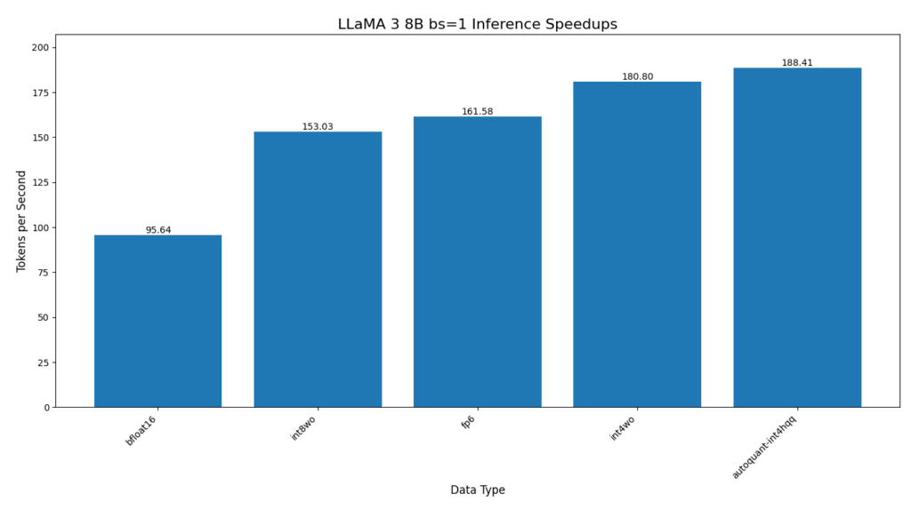
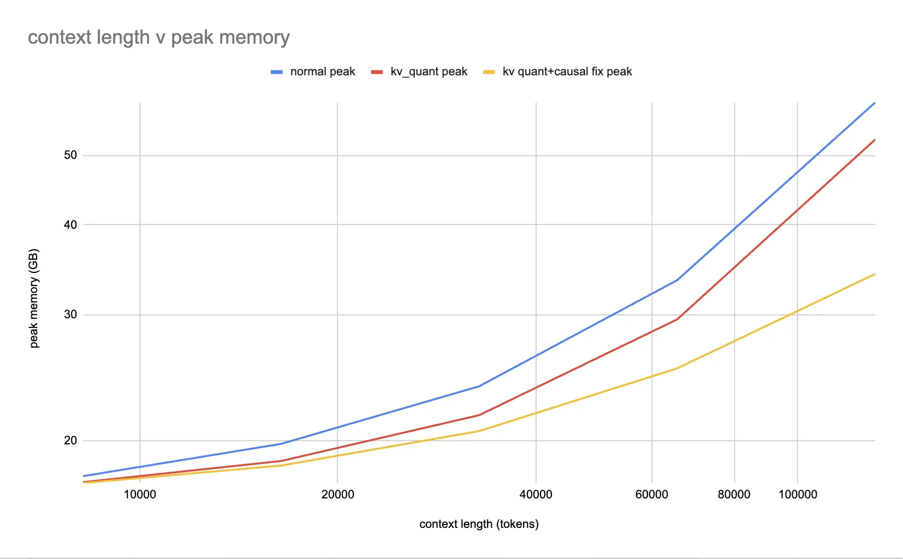
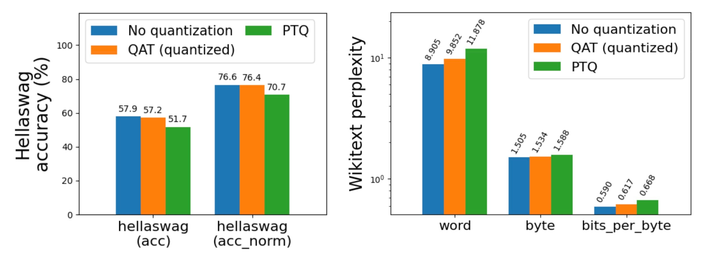
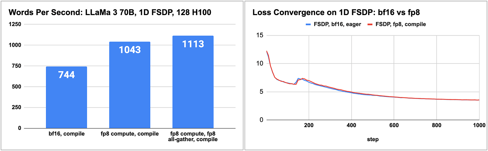
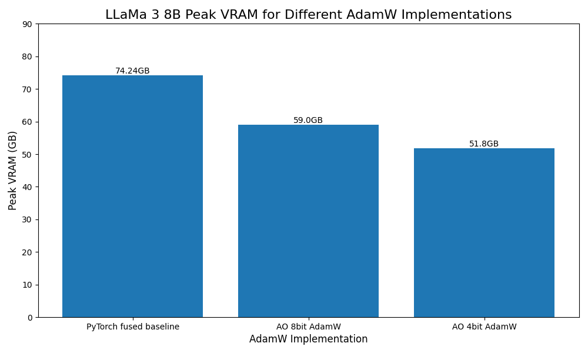

We’re happy to officially launch torchao, a PyTorch native library that makes models faster and smaller by leveraging low bit dtypes, quantization and sparsity. torchao is an accessible toolkit of techniques written (mostly) in easy to read PyTorch code spanning both inference and training. This blog will help you pick which techniques matter for your workloads.
We benchmarked our techniques on popular GenAI models like LLama 3 and Diffusion models and saw minimal drops in accuracy. Unless otherwise noted the baselines are bf16 run on A100 80GB GPU.
Our topline metrics for llama 3 are
- 97% speedup for Llama 3 8B inference using autoquant with int4 weight only quantization and hqq
- 73% peak VRAM reduction for Llama 3.1 8B inference at 128K context length with a quantized KV cache
- 50% speedup for Llama 3 70B pretraining using float8 training on H100
- 30% peak VRAM reduction for Llama 3 8B using 4 bit quantized optimizers.
Our topline metrics for diffusion model inference
- 53% speedup using float8 dynamic quantization inference with float8 row-wise scaling on flux1.dev onH100
- 50% reduction in model VRAM for CogVideoX using int8 dynamic quantization
Below we’ll walk through some of the techniques available in torchao you can apply to your models for inference and training.
Inference
Our inference quantization
algorithms work over arbitrary PyTorch models that contain nn.Linear
layers. Weight only and dynamic activation quantization for various
dtypes and sparse layouts can be chosen using our top
level quantize_ api
from torchao.quantization import (
quantize_,
int4_weight_only,
)
quantize_(model, int4_weight_only())Sometimes quantizing a layer can make it slower because of overhead so if you’d rather we just pick how to quantize each layer in a model for you then you can instead run
model = torchao.autoquant(torch.compile(model, mode='max-autotune'))quantize_ API has a few different options depending on
whether your model is compute bound or memory bound.
from torchao.quantization import (
# Memory bound models
int4_weight_only,
int8_weight_only,
# Compute bound models
int8_dynamic_activation_int8_semi_sparse_weight,
int8_dynamic_activation_int8_weight,
# Device capability 8.9+
float8_weight_only,
float8_dynamic_activation_float8_weight,
)We also have extensive benchmarks on diffusion models in collaboration with the HuggingFace diffusers team in diffusers-torchao where we demonstrated 53.88% speedup on Flux.1-Dev and 27.33% speedup on CogVideoX-5b

Our APIs are composable so we’ve for example composed sparsity and quantization to bring 5% speedup for ViT-H inference
But also can do things like quantize weights to int4 and the kv cache
to int8 to support Llama 3.1 8B at the full 128K
context length running in under 18.9GB of VRAM.

QAT
Post training quantization, especially at less than 4 bit can suffer from serious accuracy degradations. Using Quantization Aware Training (QAT) we’ve managed to recover up to 96% of the accuracy degradation on hellaswag. We’ve integrated this as an end to end recipe in torchtune with a minimal tutorial

Training
Low precision compute and communications
torchao provides easy to use e2e workflows for reducing the precision of training compute and distributed communications, starting with float8 for `torch.nn.Linear` layers.Here is a one-liner to convert the compute gemms of your training run to float8:
from torchao.float8 import convert_to_float8_training
convert_to_float8_training(model)For an e2e example of how to speed up LLaMa 3 70B pretraining by up to 1.5x with float8, see our README, and torchtitan’s blog and float8 recipe.
Performance and accuracy of float8 pretraining of LLaMa 3 70B, vs bfloat16

(source: https://dev-discuss.pytorch.org/t/enabling-float8-all-gather-in-fsdp2/2359)We are expanding our training workflows to more dtypes and layouts
Low bit Optimizers
Inspired by Bits and Bytes we’ve also added prototype support for 8 and 4 bit optimizers as a drop in replacement for AdamW.
from torchao.prototype.low_bit_optim import AdamW8bit, AdamW4bit
optim = AdamW8bit(model.parameters())
Integrations
We’ve been actively working on making sure torchao works well in some of the most important projects in open source.
- Huggingface transformers as an inference backend
- In diffusers-torchao as a reference implementation for accelerating diffusion models
- In HQQ for fast 4 bit inference
- In torchtune for PyTorch native QLoRA and QAT recipes
- In torchchat for post training quantization
- In SGLang for for int4 and int8 post training quantization
Conclusion
If you’re interested in making your models faster and smaller for training or inference, we hope you’ll find torchao useful and easy to integrate.
pip install torchao
There are a lot of things we’re excited about next ranging from going lower than 4 bit, performant kernels for high-throughput inference, expanding to more layers, scaling types or granularities, MX hardware support and supporting more hardware backends. If any of the above sounds exciting you can follow our progress at: https://github.com/pytorch/ao
If you’re interested in working on torchao, we’ve created a contributors guide, and if you have any
questions we hang out on the #torchao channel on discord.gg/gpumode
Acknowledgements
We are fortunate to stand on the shoulders of giants and collaborate with some of the best people in open source. Thank you!
- Bits and Bytes for pioneering work in low bit optimizers and QLoRA
- Answer.ai for their engineering work to get FSDP and QLoRA composing
- Mobius Labs for the lovely back and forths on quantization algorithms and low bit kernels
- HuggingFace transformers for their help in battle testing and integrating our work
- HuggingFace diffusers for our collaboration on extensive benchmarks and best practices
- torch.compile so we could write our algorithms in pure PyTorch
- GPU MODE for most of our early contributors